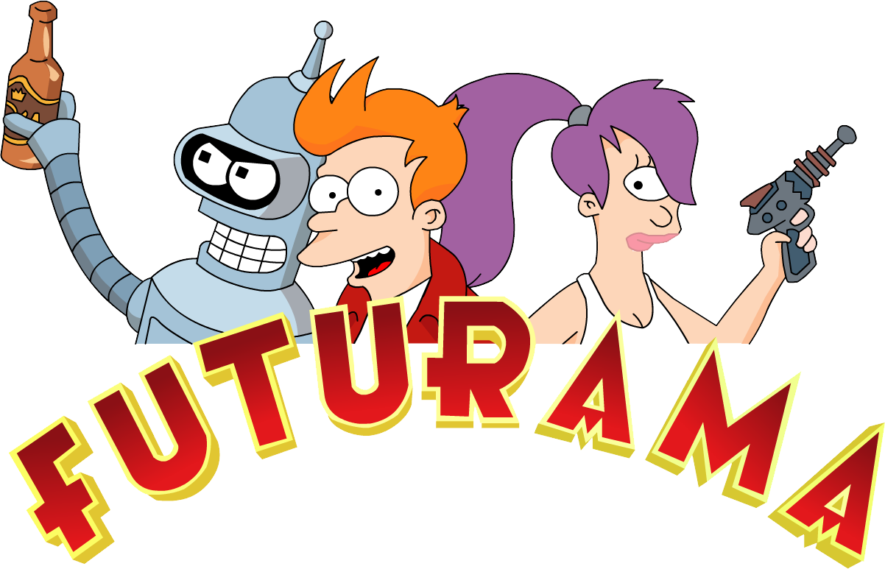
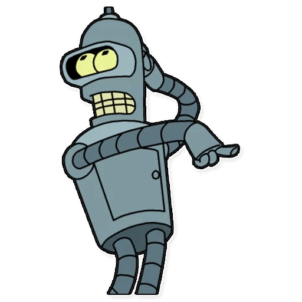
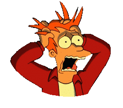
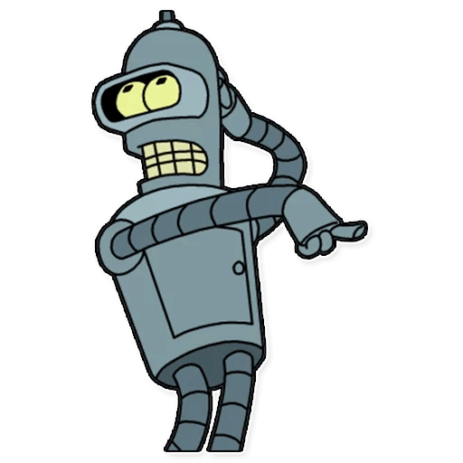
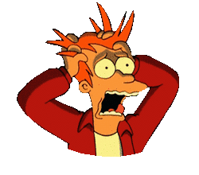

- Home
- Facts
- Characters
- Watch now
Futurama is an American animated science fiction sitcom created by Matt Groening that ran on Fox from March 28, 1999 to August 10, 2003, and on Comedy Central from March 23, 2008 to September 4, 2013. The series follows the adventures of slacker Philip J. Fry, who is cryogenically preserved for 1000 years and is revived in the 31st century. Fry finds work at an interplanetary delivery company. The series was envisioned by Groening in the mid-1990s while working on The Simpsons; he brought David X. Cohen aboard to develop storylines and characters to pitch the show to Fox.
Following its initial cancellation by Fox, Futurama began airing reruns on Cartoon Network's Adult Swim programming block, which lasted from 2003 to 2007. It was revived that year as four direct-to-video films, the last of which was released in early 2009. Comedy Central entered into an agreement with 20th Century Fox Television to syndicate the existing episodes and air the films as 16 new, half-hour episodes, constituting a fifth season.
In June 2009, Comedy Central picked up the show for 26 new half-hour episodes, which began airing in 2010 and 2011.The show was renewed for a final, seventh season, with the first half airing in 2012 and the second in 2013. An audio-only episode featuring the original cast members was released in 2017 as an episode of The Nerdist Podcast.
Futurama was nominated for 17 Annie Awards, winning seven, and 12 Emmy Awards, winning six. It was nominated four times for a Writers Guild of America Award, winning for the episodes "Godfellas" and "The Prisoner of Benda". It was nominated for a Nebula Award and received Environmental Media Awards for the episodes "The Problem with Popplers" and "The Futurama Holiday Spectacular".Merchandise includes a tie-in comic book series, video games, calendars, clothes and figurines. In 2013, TV Guide ranked Futurama one of the top 60 Greatest TV Cartoons of All Time .
Following its initial cancellation by Fox, Futurama began airing reruns on Cartoon Network's Adult Swim programming block, which lasted from 2003 to 2007. It was revived that year as four direct-to-video films, the last of which was released in early 2009. Comedy Central entered into an agreement with 20th Century Fox Television to syndicate the existing episodes and air the films as 16 new, half-hour episodes, constituting a fifth season.
In June 2009, Comedy Central picked up the show for 26 new half-hour episodes, which began airing in 2010 and 2011.The show was renewed for a final, seventh season, with the first half airing in 2012 and the second in 2013. An audio-only episode featuring the original cast members was released in 2017 as an episode of The Nerdist Podcast.
Futurama was nominated for 17 Annie Awards, winning seven, and 12 Emmy Awards, winning six. It was nominated four times for a Writers Guild of America Award, winning for the episodes "Godfellas" and "The Prisoner of Benda". It was nominated for a Nebula Award and received Environmental Media Awards for the episodes "The Problem with Popplers" and "The Futurama Holiday Spectacular".Merchandise includes a tie-in comic book series, video games, calendars, clothes and figurines. In 2013, TV Guide ranked Futurama one of the top 60 Greatest TV Cartoons of All Time .
- 1. Мэтт Грейнинг утверждает, что идея «Футурамы» пришла к нему во время прослушивания песни «Robot Blues» группы The Incredible String Band.
- 2. «Футурама» получила своё имя от экспозиции фирмы General Motors на выставке New York World’s Fair 1939 года. Экспозиция демонстрировала видение Нью-Йорка будущего.
- 3. Инопланетный язык был дважды изменен за время показа сериала, так как фанаты расшифровывали код.
- 4. В одном эпизоде показывается формула, решение которой позволяет героям вернуться в тело. Интересно, что данная формула реально существует, но пока что не исследована до конца.
- 5. Прототип Фрая — персонаж Джеймса Дина из фильма «Бунтарь без идеала».
- 6. Пёс Фрая, Сеймур, никто иной как нарисованный Хатико, который ждал своего хозяина на протяжении 10 лет.
- 7. Для того, чтобы показать логотип «30th century FOX television» Мэтту Грейнингу пришлось купить лицензию. Телекомпания FOX ужасно протестовала, но ничего не могла поделать.
- 8. Был снят эпизод, который полностью состоит из гипноза от гипножабы. Все 22 минуты вы наблюдаете гипножабу и закадровый голос говорит: «Вы заснете, а проснувшись ничего не вспомните и будете чувствовать себя расслабленными и отдохнувшими».
- 9. Фрай назван Филлипом в честь Фила Хартмена — американского актера, сценариста, комика и художника, который изначально должен был озвучивать главного персонажа. К сожалению, Фил скончался до начала шоу.
- 10. Бендер назван в честь Джона Бендера, бунтаря-школьника, персонажа фильма «Клуб „Завтрак“.
 


